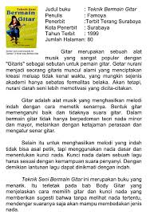

| Dalam pelajaran Bahasa Indonesia saya belajar tentang teks reseni, teks iklan, teks puisi, dll. Dalam setiap bab kami pelajari hakikat, komposisi isi, menganalisis kebahasaan, dan mnegenali struktur. Menurut saya yang paling susah bagi saya adalah teks puisi karena dalam bab tersebut kita harus membuat puisi sendiri. |
|---|
|  |